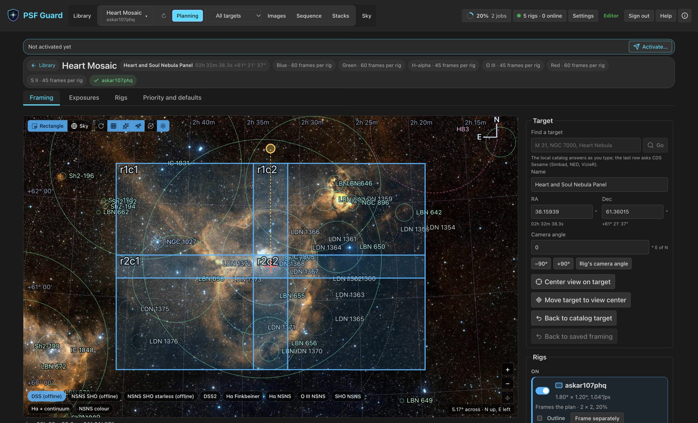
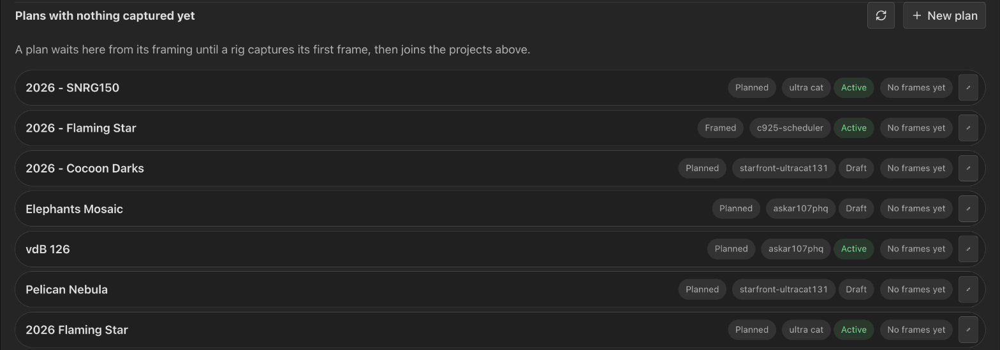
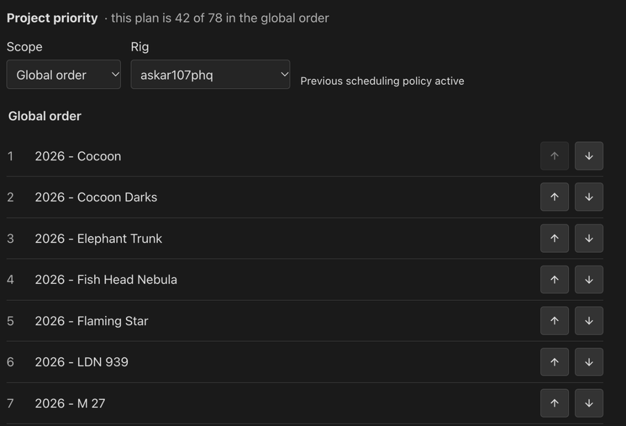
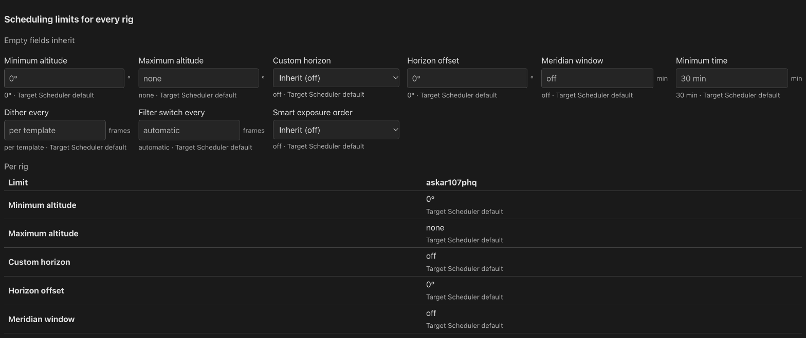

Planning
Plan a target once for every rig that shoots it. Frame it on the sky, set goals per filter, and write the result into each rig's Target Scheduler database. Plans live in the Library beside the projects they shoot.

Rigs and plans appear on their own
There is nothing to set up. Opening the Library takes every registered database in as a rig and every Target Scheduler project in it as a plan.
- Projects that share a Target Scheduler GUID across databases, as Sync copies do, become one plan shot by several rigs. Projects that only share a name stay separate plans.
- What Target Scheduler already holds becomes the plan's first draft: its targets become the framing, with a mosaic grid when the targets form one, and its exposure plans become goals per filter.
- Until you save or activate the plan, it follows Target Scheduler. A desired count raised or a target moved in N.I.N.A. shows up on the next listing. After the first save, the drafts are yours.
- A plan covers one target or one mosaic. A project of separate targets is drafted from its first target, and Target Scheduler keeps running the rest.
Each rig database gets a small identity table, so a moved or renamed file stays the same rig. The tables PSF Guard adds are plain SQL; N.I.N.A. and Target Scheduler open the file as before.
Plans in the Library
A plan has no list of its own: it is its projects in the Library. A plan shot by several rigs is an outer pill, N rigs, with the plan's total progress, its stage (Framed, Planned or Active on N rigs) and a Planning button. Under it sits one row per rig, since each rig holds its own targets and frame counts.

- Planning (⚙ on a compact row) opens the plan's workspace.
- Plans with nothing captured yet, below the projects, lists plans framed before any rig takes them and plans activated on rigs that have not captured a frame. New plan starts one; the pencil renames one.
- The Show select and the search box narrow plans and projects together. No database keeps plans nothing shoots yet.
- On a server with database management, a row's state pill is a select: Active, Inactive, Draft or Closed writes that project in Target Scheduler at once.
Open a plan's workspace
Choose Planning on a Library row, or pick the project in the header and choose Planning there. A plan with no database yet starts its framing from a name or typed coordinates.
The workspace has a summary at the top (target, goals, each rig's setup and the activation state) and four tabs:
| Tab | What it holds |
|---|---|
| Framing | The target, camera angle, mosaic grid and each rig's field on a survey image, with tonight's visibility. See Framing. |
| Exposures | Goals per filter, and for each rig its template, exposure length and frames. See Exposures. |
| Rigs | Each rig's database project, its Target Scheduler settings and targets, and the plan's scheduling limits. See Rigs tab. |
| Priority and defaults | Project order and scheduling defaults for every plan, a site or a rig. |
The workspace address is /plan?plan=<key>. The key is the
Target Scheduler GUID the plan's rigs share, so one link opens the same plan
on any PSF Guard that holds those databases. The open tab is part of the
address.
Save from one bar
Edits wait for the save bar at the top of the page. It names every section with unsaved changes and lists what changed. Switching tabs keeps edits. Leaving the page, closing the tab, or opening another plan with edits unsaved asks first.
A copy saved elsewhere never replaces your edits. The tab says the plan changed and offers Reload; the bar will not save over it.
Activate
Activation writes the saved plan into each rig's Target Scheduler database. Once every edit is saved, a bar asks for an activation while the rigs lack the saved plan; Activate… opens the preview. The summary reads On the rigs when nothing is missing, and Drafts only on a server that does not write rig databases. See Activation.
Order projects
Open Priority and defaults and unfold Project priority. Move projects with the up and down buttons and save the Global order once for all rigs. A site or rig override replaces that list for its rigs; tick Use inherited order to go back to the parent order.
The highest eligible project runs first. Finished work, blocked filters, horizon and meridian limits still stop acquisition. Goal priorities choose work inside a project; they never lift a lower-ranked project. New projects follow the saved list by name until you rank them. The list holds up to 1024 projects.

Scheduling limits
A plan carries Target Scheduler's per-project limits: minimum time, minimum and maximum altitude, custom horizon and its offset, meridian window, filter switch frequency, dither interval and smart exposure order.
- Set defaults for every plan, or for one site, on Priority and defaults.
- Set a rig's own under Setup › Limits and delivery.
- Set one plan's own on its Rigs tab under Scheduling limits for every rig. A table shows what each rig gets and where each value comes from.
The nearest scope that sets a limit wins: plan, then rig, then the rig's site, then global. An empty field inherits and says from where. A limit nobody sets keeps Target Scheduler's default. Activation writes the resolved limits into each rig's project, so they hold when Target Scheduler runs the rig on its own.

Attach and detach projects
Two rigs that each made their own project for one target are two plans, since their GUIDs differ. In one plan's workspace, attach the other's project: the list offers projects in databases this plan has none in. Attaching moves the other plan's database links here and retires it. This plan keeps its own framing and goals and takes the other's only where it has none.
Detach gives a database's project a plan of its own again. When this plan has work for that rig, Detach says how many goals go and asks first. The project keeps its rows in Target Scheduler either way.
Fill in missing GUIDs
Target Scheduler skips GUIDs for existing rows when a database jumps past
its schema 22 in one upgrade, and such projects cannot be planned.
Settings › Databases says how many rows are affected and
offers Fill in GUIDs. It copies the file beside itself first
(<file>.before-guid-fill-<seconds>), then fills only the
empty GUIDs.
psf-guard -d schedulerdb.sqlite fill-guids --dry-run
psf-guard -d schedulerdb.sqlite fill-guidsWhere plans are kept
Drafts, rig profiles, sites and the template library live in
director-meta.sqlite beside the database registry, or at
--director-meta <path>. Back it up with the registry. Docker
keeps it under /data/config. Director remains the name of the
N.I.N.A. plugin, its protocol and the API.